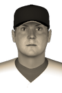

|
|
|  |
Toronto's Brackett to Miss Season Tuesday, August 7th, 1900 Evan Brackett has to call it a season. The Toronto Blue Sox first baseman sustained a season-ending injury against the New York Rebels and will not play again this year according to club doctors. Brackett was injured while colliding with a player at a base. His doctors diagnosed it as a concussion and stated that he would not be able to play for 5-6 weeks. So far this year Brackett is batting .276 with no home runs, 23 RBIs and 33 runs scored. |


|